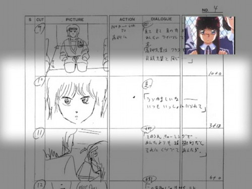

Battle Royal High School Anime Review
{kind=link}
Battle Royal High School
 / OVA / Action / 16-up
/ OVA / Action / 16-up
Bottom Line
Impressively convoluted plot, impressively detailed destruction.
It’s Like...
...A splatterfest Ushio & Tora minus the comedy.
Vital Stats
Original Title
真魔神伝 - バトルロイヤルハイスクール
Romanized Title
Shinmajinden - Battle Royal High School
Literal Translation
Legend of the True Demon Lord
Animation Studio
DAST
US Release By
Genre
Sci-fi Action Fantasy Horror
Series Type
OVA
Length
60 minutes
Production Date
1987-12-10
What's In It
Categories
Look For
- Space-time Police
- Demon Invasion
- Icky Fairies
- Bokken-wielding Demon Hunters
- Mass School Destruction
- Martial Arts
- Ugly Beasties
- Girl Reconstruction
- Plot Overload
Objectionable Content
- Violence: 4 (heavy)
- Nudity: 3 (significant)
- Sex: 2 (moderate)
- Language: 3 (significant)
Plot Synopsis
A simple story about a high school karate master possessed by a demon lord who is his doppelganger and wants to enslave the world but first needs to destroy a demonic fairy who also wants to enslave the world and is possessing a demon hunter, and the high-tech temporal security officer who's trying to stop most of them. Or at least some of them. And there's also a love triangle.
Quick Review
Switch to Full ReviewJust the synopsis of Battle Royal High School is enough to make your head spin. Every cheesy anime cliche you can think of, at the same time! Seriously, it crams five different dueling factions into three bodies and only 60 minutes of anime. Frankly there's only one reason to watch it, though: A solid hour of superpowered fighting and stuff blowing up in graphic detail. Even if you do manage to follow the impressively convoluted plot, none of the characters are likable enough to care about, the love triangle is a complete afterthought, and none of it makes much sense anyway. But you probably won't care--you'll be too mesmerized by the exquisite detail with which the carnage and property damage is rendered. This one-shot may be from the late '80s, but it has detailed destruction like nobody's business. The best bit, however, is some un-destruction--the "hero" (if you can even call him that) reconstructs an exploded girl from the inside out. You don't see that every day.
In all, Battle Royal High School combines old-school martial arts action, splatterfest demon invasion, a lot of superpowered sword fighting, and a smattering of humor into one action-packed and thoroughly confusing nugget of anime, but the real draw is the beautifully-animated carnage and property damage. If that's your thing, get some. Otherwise, forget it (though anybody with the stomach for it should see the girlfriend-reconstruction sequence at least once).
Full Review
Switch to Quick ReviewJust the synopsis of Battle Royal High School is enough to make your head spin. Every cheesy anime cliche you can think of, at the same time! Seriously, it's that confusing--it crams five different dueling factions into three bodies and only 60 minutes of anime. Frankly, there's only one reason to watch it, though: A solid hour of superpowered fighting and stuff blowing up in graphic detail.
Really. That's the only reason to watch. The plot is so convoluted it's impressive, but I doubt you'll care what's going on even if you can follow it. Besides, you'll be too distracted by the actual draw of this whacked-out little chunk of action: Stuff blowing up. A lot of stuff blowing up. Monsters blowing up, animals blowing up, people blowing up, cars blowing up, classrooms blowing up, and entire schools blowing up. All in the most exquisite detail. Oh, there's also a lot of monsters getting torn into small, gooey chunks, but that pretty much counts as blowing up, too.
Yes, I suppose there's a whole lot of sword fighting and other forms of brawling, too, but the best part of all that is still the resulting property damage.
What's impressive is how good it all looks--Battle Royal High School might be a product of the late '80s, but it must have had one heck of a budget, and every last yen went into lavish sequences of exploding educational paraphernalia and flying chunks of evil. Seriously, some of the scenes are almost mesmerizing for the meticulous care with which every glob of gore and bit of bone is rendered. All this and it still has the rougher, more detailed linework you'd expect from an older production. The most impressive bit, however, is (somewhat ironically) something un-blowing-up: A sequence of our hero reconstructing an exploded girl from splattered gore--from the inside out. It only lasts a few seconds, but wow, you don't see that every day.
Past the loads of action and visual spectacle... yeah, that's really about it. The only character who's even likable enough to care about is one of the two potential love interests, a feisty girl who spends most of her screen time chasing the hero or punching him. The "love triangle" is amusing for how much of an afterthought it is--the "sweet girl" corner spends more time dead or unconscious than anything else.
The only other significant characters are the five different warring factions. If you bother to keep track, they include a very evil fairy queen and her minions (don't laugh--these fairies are nasty little critters), a slightly less evil lord of the dark world, an egotistical high school Karate champ who likes to wear a jaguar mask (wait, that reminds me of a video game...), a grimacing demon hunter, and a laid-back space-time cop in a battlesuit with a light saber (seriously--it even sounds like one). The most impressive feature of this crowd is that they all end up sharing only three bodies, and basically spend the entire movie trying to kill each other in various combinations. Frankly, you could care less who wins. High schooler Rikki is mildly appealing for the dumb-jock grin he wears through basically everything, but even he's sharing a body with a guy planning to conquer Earth, a fact that doesn't seem to bother him in the least.
Come to think of it, nearly every character in Battle Royal High School is possessed by somebody, so they get a lot of mileage out of a small voice cast--almost everybody gets to be both good and evil. That said, the acting is passable but unimpressive in both Japanese and English. In the dub, Rikki is probably the best of the lot. He's the most distinctive in the Japanese version, too, although his evil doppelganger sounds way too whiny for an evil lord.
There is technically background music, but it's barely noticeable and entirely forgettable. The end theme is better--a poorly-sung but distinctive bit of hard-edged classic J-Rock.
In all, Battle Royal High School combines old-school martial arts action, splatterfest demon invasion, a lot of superpowered sword fighting, and a smattering of humor into one action-packed nugget of anime, but its distinguishing features are an impressively convoluted plot and amazingly well-animated carnage and property damage. If that's your thing, get some. Otherwise, forget it (though anybody with the stomach for it should see the girlfriend-reconstruction sequence at least once).
Have something to say about this anime? Join our newly-resurrected forums and speak your mind.
Related Recommendations
The schoolyard evil thing is relatively similar to Ogre Slayer, and the semi-humorous old-school carnage reminded me of Ushio and Tora, though that series is closer to comedy. It also bears a passing resemblance to The Ultimate Teacher, mainly for the schoolyard warfare.
Notes and Trivia
Based on a 4-volume manga series, Majinden (魔人伝/魔神伝 - "Legend of the Demon Lord"), by Shinichi Kuruma (serialized between 1985 and 1988 in Shounen Captain Comics). The anime version covers about the first volume of the manga, and is somewhat, shall we say, compressed, leading to the... rather dense plot of the anime.
Note that the way the title is written, the characters for "god" (人) and "human" (神) are overlapped, I assume in reference to the human Rikki and his demon-world counterpart. The anime title adds "true" ("shin") to the beginning, and also adds the (Japan-ized English) subtitle Battle Royal High School, which is where AnimEigo got the English title.
Gainax fans might note that this is a relatively early production that they had a hand in, although only doing a bit of assistant animation.
Japanese music fans might note that the end theme, MEDUSA, is written by Takahiro "Tak" Matsumoto, best known as the lead guitarist and arranger for B'z.
Random visual joke: In one shot where the school's shoe storage area is wiped out in a wave of destruction, among the flying debris you can catch a glimpse of a heart-sealed love letter, a nod to the anime standby of love letters that girls leave for boys to find on their way home.
As always, AnimEigo has the full liner notes and credits on their website (in this case, the liner notes are amusingly brief).
US DVD Review
AnimEigo's DVD is simple, but has about everything you could want. The video is a little harsh, but not bad considering the age of the production and there are no noticeable compression artifacts, impressive given the extreme density of linework in several scenes. The two-channel audio in both languages is acceptable, nothing more, and you can take your pick of limited subtitles or full; appealingly, even the credits are soft-subtitled, overlaid on the original Japanese ones. It includes the Japanese trailer for Riding Bean as an extra (I guess it was on the video originally?), but the only real extra is actually rather cool: There's an alternate video track with the storyboards for the entire production, following along with a little picture-in-picture version of the actual film in real time, shown below. Quite nice for those who like to see how storyboards translate into finished product.

There's also a "recipe card" in the box with AnimEigo's famed liner notes (also available on their website), but this title only has three comments, so it's amusingly lean.
Parental Guide
AnimEigo calls it 18-up, though really 16-up is probably sufficient--it's way gory, but not that offensive.
Violence: 4 - Monsters of all shapes and sizes being ripped to pieces, and a lurid girl reconstruction.
Nudity: 3 - One scene with a fair amount, plus some naked female fairy-monsters.
Sex/Mature Themes: 2 - Some mature themes and an attempted rape, but nothing explicit.
Language: 3 - A reasonable amount of profanity (surprising coming from AnimEigo).
Staff & Cast
Original Japanese Cast
Note: Following AnimEigo's tradition, all Japanese names are listed family name first.
Hyoudo Riki/Byoudo: Yao Kazuki
Yuuki Toshihiro: Inoue Kazuhiko
Zankan: Tanaka Hideyuki
Takayanagi Yooko: Tamagawa Sakiko
Koyama Megumi: Honda Chieko
Fairy Master: Yokoo Mari
Baba: Aomori Shin
Sandy: Tomizawa Michie
Sakamoto: Nishimura Tomohiro
Nakano: Shinohara Emi
Junko: Takamori Toshino
Misaka: Inagaki Satoru
Tooru: Kitajima Junji
Suguru: Nakamura Hiroki
Toyokura (Teacher): Umezu Hideyuki
The Fairy: Sasaki Natsumi
Byoudo's Servant: Goori Daisuke
English Dub Cast
Hyoudo Riki/Byoudo: Michael Granberry
Yuuki Toshihiro: G. Briahn Realmercy
Zankan: Paul Sincoff
Takayanagi Yooko: Susan Grillo
Koyama Megumi: Kristen Graf
Fairy Master: Hadley Eure
Baba: Pierre Brulator
Sandy: Deann Korbutt
Byoudo's Servant: Eric Paisley
Nakano: Shelby Reynolds
Teacher: Patt Noday
Additional Voices: David Arnold, Scott Simpson, Ralph Brownewell, Noah Shan
Crew
Based on the Manga by Kuruma Shin'ichi (published in Tokuma's Monthly "Shonen Captain")
Producers: Sakamoto Seiichi (TOKUMA JAPAN) and Miyashita Kenji (DAST)
Director: Itano Ichiroo
Original Story, Screenplay, Storyboards: Itano Ichiroo
Music: Sagisu Shiroo
Character Design, Animation Direction: Yuuki Nobuteru
Assistant Animation Directors: Urushibara Tomoshi, Niioka Hiromi, Oogami Hiroaki, Anno Hideaki
End Theme: "MEDUSA"
Lyrics: Sugimoto Yuuri
Music: Matsumoto Takahiro
Arrangement: Oda Tetsuroo and Matsumoto Takahiro
By Tokuma Japan Communications
Availability
Available in North America from AnimEigo on bilingual DVD. Was previously available on subtitled or dubbed VHS, as well as bilingual LD (dub on one side, sub on the other).
Looking to buy? Try these stores:
RightStuf (search) |
AnimeNation |
Amazon